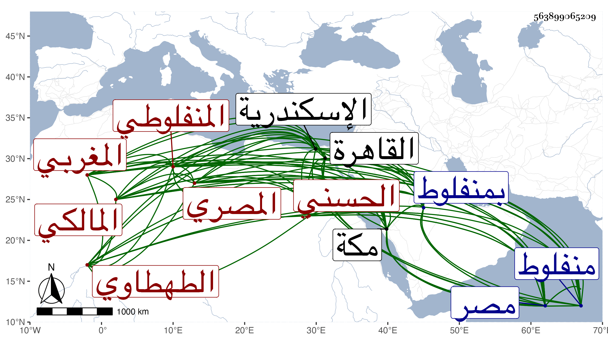

0902Sakhawi.DawLamic.ITO20230111-ara1.EIS1600.563899065209
Biography ID: 563899065209
454
محمد بن أبي بكر بن محمد بن حريز ويدعى محرز بن أبي القسم بن عبد العزيز بن يوسف حسام الدين أبو عبد الله الحسني المغربي الأصل الطهطاوي المنفلوطي المصري المالكي أخو عمر الماضي ويعرف بابن حريز بضم المهملة ثم راء مفتوحة وآخره زاي . ولد في العشر الأخير من رمضان سنة أربعع وثمانمائة بمنفلوط وانتقل منها وهو صغير مع أبيه إلى القاهرة فقرأ بها القرآن عند الشهاب جمال الدين بن الإمام الحسني وتلاه لأبي عمرو من طريق الدوري على الجمال يوسف المنفلوطي أحد تلامذة جده الأعلى أبي القسم المذكور بالإمامة في القراءات وغيرها ثم على الشهابين ابن البابا والهيثمي وتلاه بعده وهو كبير في مجاورته بمكة للسبع إفرادا وجمعا على محمد الكيلاني وحفظ قبل ذلك العمدة والشاطبية والرسالة وألفية النحو وعرضها على الجمال الاقفهسي والبدر بن الدماميني والبساطي وابن عمه الجمال وابن عمار والولي العراقي والعز بن جماع والجلال البلقيني والشمس والمجد البرماويين وشيخنا التلواني في آخرين ، وتفقه بالزين عبادة والشمس الغماري المغربي نزيل الصرغتمشية وكذا أخذ عن البساطي وغيرهم وسمع على الولي العراقي وكذا الزين بن عياش وأبي الفتح المراغي بمكة بل قرأ بها على البدر حسين الأهدل الشفا ، وحج غير مرة وولي قضاء منفلوط عن شيخنا فمن بعده وأورد شيخنا في حوادث سنة اثنتين وأربعين أن البهاء الاخنائي حكم بحضرة مستنيبه بقتل بخشباي الأشرفي حدا لكونه لمن أجداد صاحب الترجمة بعد قوله له : أنا شريف وجدي الحسن بن فاطمة الزهراء ، واتصل ذلك بقاضي اسكندرية فأعذر ثم ضربت عنقه ولازم الحسام المطالعة في كتب الفقه والتفسير والحديث والتاريخ والأدب حتى صار يستحضر جملة مستكثرة من ذلك كله ويذاكر بها مذاكرة جيدة مع سرعة الادراك والفصاحة والبشاشة والحياء والشهامة والبذل لسائله وغيرهم والقيام مع من يقصده في مهماته واقتناء الكتب النفيسة والتبسط في أنواع المآكل ... ونحوها والقيام بما يصلح معيشته من مزدرع الغلال والقصب وطبع السكر وغير ذلك وحمد الناس معاملته في صدق اللهجة والسماح وحسن الوفاء حتى رغب أرباب الأموال في معاملته ثم لم يزل هذا دأبه إلى أن ارتقى لقضاء المالكية بالديار المصرية بعد موت الولوي السنباطي وباشره بعفة ونزاهة وشهامة وزاد في الإحسان سيما لنوابه وأهل مذهبه فازدحموا ببابه ، وقرأ عنده البدر بن المخلطة في مدارك القاضي عياض وفي جواهر ابن شاس وناب عنه في تدريس المنصورية يحيى العلمي وفي الناصرية السنهوري وفي الصالحية الوراق وممن تردد إليه الشهاب ابن أسد وابن صالح الشاعر وسمعت العز الحنبلي يقول أنه لا ينهض أن يغرب عليه في الأدب فنه إشارة إلى ملاءة الحسام ، وكنت ممن صحبه قديما وأمرني الزين البوتيجي باسماعه شيئا من تصانيفي ثم استجازني له بل ولنفسه وكذا استجازني هو بالقول البديع وتناوله مني وكتب بخطه ما نصه : وقد استجزته منه لأوريه عنه بسند صحيح وتناولته من يده بقلب منشرح وأمل فسيح ، ثم التمس مني بعد ولايته القضاء كتابة سنده بالبخاري فخرجت له فرستا وقراءة جامع الترمذي عنده في رمضان ففعلت وكذا رغب في تبييض كتابي في طبقات المالكية وشرعت في ذلك فمات قبل انهاء تبييضه واستقر في تدريس الشيخونية وجامع طولون عند موت العجيسي وولده وباشرهما وكذا باشر تدريس المؤيدية نيابة عن ابن صاحبه البدر بن المخلطة ، ولم يزل عل جلالته وعلو مكانته حتى حصل بينه وبين العلاء بن الأهناسي الوزير ما اقتضى له السعي في صرفه بيحي بن صنيعة كان سببا لتحمله الديون الجزيلة وانحطاط مرتبته بل كاد أمره أن يتفاقم . ومات في ليلة الاثنين مستهل شعبان سنة ثلاث وسبعين بمنزله بمصر وصلى عليه من الغد بجامع عمرو رحمه الله وإيانا وعفا عنه .
